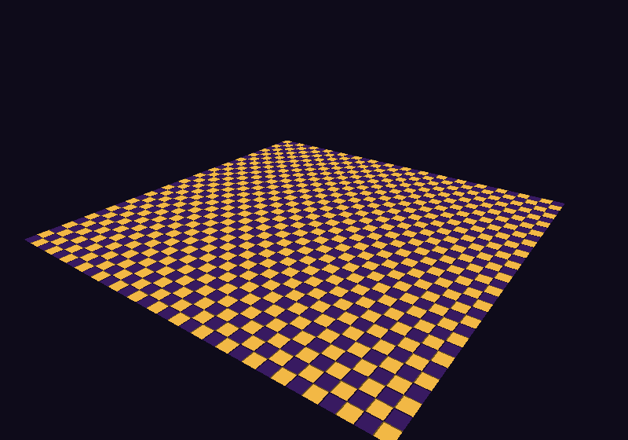
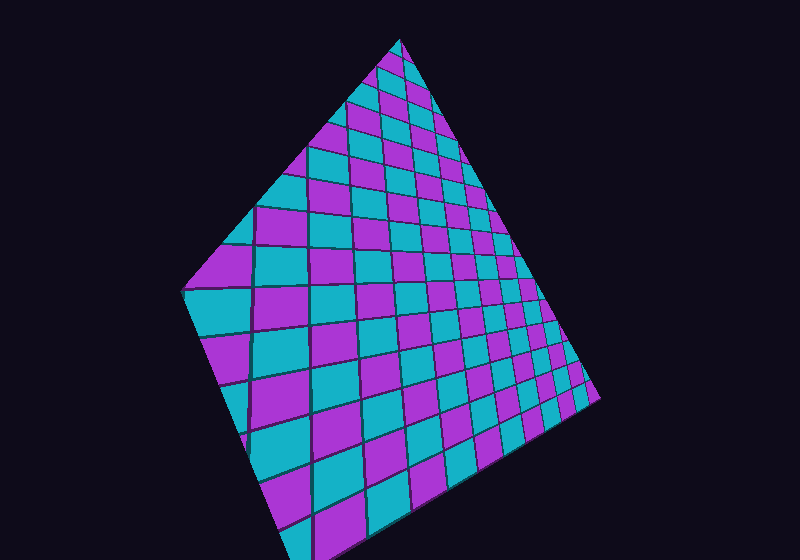
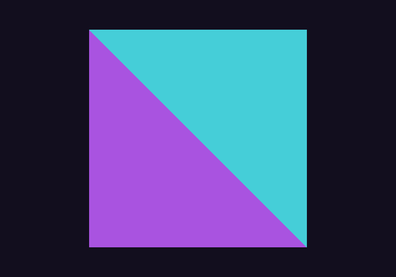

Affine and perspective-correct interpolation

a(p) = Σ λᵢ aᵢ / wᵢ ÷ Σ λᵢ / wᵢNearest-neighbor texture sampling and one sample per pixel expose aliasing. The comparison changes only attribute interpolation, not geometry, camera or texture.
Homogeneous clipping

Six half-spaces
−w ≤ x, y, z ≤ w
Sutherland–Hodgman clips the polygon against each plane. New vertices interpolate clip coordinates and attributes at the same edge parameter.
Near-plane crossing
One vertex starts in front of the near plane. The surviving polygon is triangulated as a fan, then rasterized.
Actual input/output clip coordinates are saved in results/clipping.json. No behind-camera coordinate is divided before clipping.
Shared-edge sample ownership

overlapping samples on the shared diagonal
covered samples = 440 × 440
Evaluate edge functions at pixel centers. Include a zero-valued edge only when it is top or left. This avoids both cracks and double ownership for exact shared vertices.
Float64 arithmetic is used; this is not a bit-exact emulation of fixed-point GPU coverage.
Depth-buffer visibility
Implementation and measurements
Implemented
Camera/view/projection matrices; six-plane clipping; triangle edge functions; top-left fill; z-buffer; perspective-correct UV and normal interpolation; repeating checker texture; approximate directional shading.
python scripts/render_study.py --movie
Procedural mesh exported as OBJ. Texture PNG, diagnostic images, coordinates, hashes and timing samples are committed.
Measured locally
Median complete frame, 480 × 320, 12 samples, CPU Python/NumPy. Includes geometry generation; excludes image encoding.
Deliberate limits
No GPU, MSAA, mipmaps, shadows, transparency or physically based lighting. Nearest sampling aliases. Floating-point shared-edge behavior is tested for the exact diagnostic geometry.